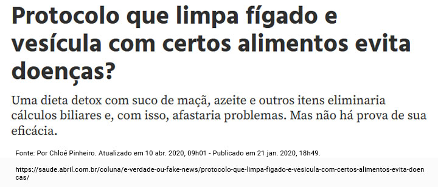

Módulo 4 | Aula 3 A Literacia Digital em Saúde como Competência para promover Saúde na APS
Atividades
Muito bem! Você chegou ao final do quarto módulo e falta cada vez menos para concluirmos nossos estudos. Antes de seguir para o próximo módulo, vamos para mais um dia da equipe da UBS Independência, que você está acompanhando.
Considerando o caso do Senhor João de Souza e os conteúdos trabalhados no Módulo 4, responda os quesitos a seguir.
1. “A Atenção Primária à Saúde (APS) se configura como a porta preferencial do sistema de saúde do país. Um dos aspectos que orienta sua prática é a relação entre os profissionais e as pessoas, caracterizado pela relação de vínculo entre profissionais e usuário. A dimensão comunicacional na construção do vínculo entre homens e profissionais de saúde na APS é condição para um cuidado adequado dessa população, na medida em que envolve responsabilização e longitudinalidade da prática de saúde”.
Fonte: Dantas GC, Figueiredo WS, Couto MT. Desafios na comunicação entre homens e seus médicos de família. Interface - Comunicação, Saúde, Educação. 2021, v. 25, e200663.
Analise as afirmativas a seguir e julgue-as como verdadeira (V) ou falsa (F). Em seguida, marque a opção correta.
( ) Um dos grandes desafios relatados pelas equipes de APS é a dificuldade de promover a atenção à saúde do homem, uma vez que a procura deles aos serviços de saúde geralmente acontece quando estão em uma situação semelhante a do Sr. João. Assim sendo, é preciso que, no primeiro contato, os profissionais de saúde estabeleçam uma relação de vínculo através do acolhimento, escuta ativa e qualificada.
( ) Uma boa comunicação no atendimento ao Sr. João poderá ajudá-lo no processo do diagnóstico, tratamento e adesão terapêutica, aliviar a ansiedade apresentada na consulta, promover informações e apoiá-lo para o autocuidado. Para tanto, é essencial que Carlos utilize uma linguagem com clareza, objetividade, simplicidade e sem jargões e avalie sua expressão facial, postura, marcha e gestos para compreender as dúvidas que possam ser relatadas por ele.
( ) No momento inicial da avaliação da condição de saúde de Sr. João, não precisa que Carlos avalie suas experiências passadas, sua formação escolar, social, cultural e religiosa, pois nesse primeiro momento, é preciso priorizar as condições clínicas e o seu diagnóstico.
( ) Uma das orientações para o autocuidado e para conhecer melhor sua condição de saúde, é importante que Carlos recomende ao Sr. João que registre em um caderno ou em seu celular, tudo o que sente para que ele possa ir acompanhando a evolução de sua nova condição de saúde e passe a anotar as dúvidas para que, durante as consultas, sejam questionadas aos profissionais de saúde.
( ) Esse primeiro contato do Sr. João com Carlos não precisa ficar registrado em seu prontuário, uma vez que seus exames ainda serão realizados. Assim sendo, quando ele retornar a UBS com os exames, será dado início ao registro no prontuário.
( ) No processo de comunicação, o feedback de Carlos ao Sr. João torna-se importante para uma avaliação crítica sobre as orientações ofertadas, que poderá ajudar nas mudanças de comportamentos e atitudes para seu autocuidado.
- V – V – V – F – V – F
- V – V – F – V – F – V
- F – V – F – V – F – F
- V – V – F – V – F – F
A comunicação eficaz entre os profissionais da APS e os usuários possibilita a criação de vínculo e confiança na troca de conhecimentos e adesão para o autocuidado. Para tanto, é preciso que os profissionais ofertem o acolhimento e a escuta ativa e qualificada desde o primeiro contato com o usuário e registrem todas as informações em seu prontuário, para que esta possa ser uma outra forma de comunicação entre a equipe.
2. A partir da notícia falsa a seguir, que foi publicada em um site sobre assuntos relacionados à saúde e o caso de Sr. João, marque a alternativa INCORRETA:

- As tecnologias digitais foram criadas para compartilhar e promover conhecimento sobre os diferentes assuntos. Como elas influenciam de forma significativa nas tomadas de decisões dos comportamentos e hábitos das pessoas, é fundamental que as equipes de saúde promovam ações na APS para orientar os usuários sobre as fontes das informações, para que sejam verificadas quanto a sua veracidade, para evitar que as fakes news comprometam as condições de saúde dos indivíduos.
- As informações pesquisadas por Sr. João permitiram que, por meio de seu pensamento rápido e lógico, ele concluísse que estava com câncer e que já sabia sobre o tratamento mais adequado para sua condição de saúde, demonstrando que as fontes acessadas estavam corretas. Assim sendo, ele agilizou seu tratamento para evitar o agravamento da doença.
- Na consulta, é importante que toda a equipe de saúde esteja atenta para fazer as orientações e alerte ao Sr. João e aos demais usuários que os sites que eles acessam podem não ser a melhor escolha para as decisões para o seu autocuidado e que, por causa da alta credibilidade que é dada a toda informação disponível na internet, poderão comprometer as suas condições de saúde.
- As alterações identificadas no exame realizado por Sr. João apontam para desajustes no organismo, o que não significa ser um câncer, como referido pelo usuário. Dessa forma, é importante que a equipe de saúde acolha as informações, porém, sem recriminações, explicando aos usuários que é preciso outros exames complementares para se diagnosticar com precisão, e que o tratamento só deverá ser iniciado quando tiver um resultado decisivo, para que os usuários não se automediquem.
A Literacia Digital em Saúde é um tema que requer atenção especial, devido aos riscos aos quais o usuário está exposto ao buscar a internet como fonte de informação, sem orientação do profissional de saúde. É recomendado que, antes de qualquer tomada de decisão para o autocuidado, seja averiguada a confiabilidade do site e/ou da rede social visitada. Assim sendo, é essencial que o profissional da APS realize ações para discussão sobre o uso de tecnologia de informação e comunicação (TIC) para buscar informações, especialmente na área de saúde, bem como verificar quais as fontes acessadas por seus usuários, para que, juntos, possam tomar as decisões para o autocuidado com responsabilidades compartilhadas.
Essa é uma alternativa válida. A opção incorreta, neste caso, é que as informações pesquisadas por Sr. João permitiram que, por meio de seu pensamento rápido e lógico, ele concluísse que estava com câncer e que já sabia sobre o tratamento mais adequado para sua condição de saúde, demonstrando que as fontes acessadas estavam corretas. Assim sendo, ele agilizou seu tratamento para evitar o agravamento da doença.
Considerando o caso de Adelaide, sua filha Catarina, e os conteúdos trabalhados no Módulo 4, responda os quesitos a seguir.
3. A respeito do caso de Catarina, leia os itens abaixo e assinale a opção CORRETA:
- Como o tema prioritário que Leila deverá abordar será a educação sexual dos adolescentes, entende-se que esta temática não causará constrangimento se as respostas vierem do contato individual do WhatsApp de Leila.
- Apesar do uso das mídias sociais (WhatsApp, Instagram, Facebook) ser uma forma de comunicação que pode ser adotada pela equipe de APS junto aos adolescentes, para a promoção de LS, o debate verbal é mais eficaz do que o virtual, por envolver a percepção dos profissionais sob outros aspectos dos adolescentes, como interação social, relatos sobre comportamentos de saúde e criação de caixa de perguntas, onde os adolescentes poderão apresentar suas dúvidas sem identificação e sem exposição para pessoas externas ao grupo.
- Como resultado positivo, o uso das mídias escritas, audiovisuais e sociais para promover LS pode proporcionar maior interesse dos adolescentes pelo conteúdo, uma melhor adesão para as mudanças recomendadas para os cuidados em saúde, e ainda é possível os profissionais da APS terem a certeza que as mudanças acontecerão de forma eficaz, pois todos os adolescentes fazem uso deste recurso.
- Para a dinâmica de grupo presencial, não é recomendado que Leila adote atividades virtuais, para que os adolescentes não percam o foco. Esta modalidade deve ser utilizada somente para diálogos complementares e posteriores, entre os adolescentes e a equipe da APS.
O uso de tecnologias de informação e comunicação (TICs) em saúde e das mídias sociais é uma estratégia interessante para promover o acesso a informações e conhecimentos, ampliar informações sobre determinada situação ou demandas. Além disso, no trabalho com adolescentes, é importante utilizar uma ferramenta que chame a atenção e mobilize estes indivíduos a participar ou mesmo pesquisar sobre o assunto abordado. No entanto, o uso das TICs e das mídias sociais carecem de um suporte da equipe de saúde para orientar a população e, neste caso, os adolescentes a identificarem sites e notícias fidedignas em contraponto às Fake News. Apesar do uso das TICs e mídias sociais ser uma forma de comunicação que poderá apresentar eficácia em alguns momentos, para a promoção da Literacia para a Saúde, ele não garante que de fato isso acontecerá. Outra desvantagem do uso destas ferramentas, em atividades de educação em saúde, é o fato de serem criadas, por vezes, barreiras de comunicação entre profissionais e usuários, gerando falsas impressões e dúvidas sobre determinadas tomadas de decisão em saúde. Em situações como a apresentada, ter encontros presenciais e potencializar o diálogo e a participação serão estratégias para capacitar os adolescentes a identificarem as informações e conhecimentos primordiais para a tomada de decisões sobre sua saúde.
Essa não é a opção correta. Apesar do uso das mídias sociais (WhatsApp, Instagram, Facebook) ser uma forma de comunicação que pode ser adotada pela equipe de APS aos adolescentes para promoção de LS, o debate verbal é mais eficaz do que o virtual, por envolver a percepção dos profissionais sob outros aspectos dos adolescentes, como interação social, relatos sobre comportamentos de saúde, e criação de caixa de perguntas onde os adolescentes poderão apresentar suas dúvidas sem identificação e sem exposição para pessoas externas ao grupo.
4. Sobre o caso de Adelaide, assinale a opção INCORRETA:
- A equipe multiprofissional da APS deverá realizar o atendimento de Henrique (acompanhado de sua mãe), compreender sua rotina, hábitos e gostos, e ajudá-lo a tomar decisões sobre a realização de atividades físicas e de lazer que possam contribuir para melhorar seu estilo de vida.
- A equipe de saúde da APS poderá orientar Henrique e Adelaide para a importância do uso das Tecnologias de Informação e Comunicação (TICs) em saúde e indicar sites confiáveis que os ajudem a buscar informações que possam promover um estilo de vida mais saudável e orientações para o autocuidado.
- Henrique poderá receber acompanhamento sistemático e contínuo da equipe de APS, de forma presencial ou virtual, por meio do Teleatendimento e do uso de aplicativos que monitoram o peso e a alimentação, uma vez que essas TICs já fazem parte das estratégias da APS.
- A equipe de saúde não deve apresentar ou indicar o uso de TICs ou participação em redes sociais virtuais que dialoguem sobre o estilo de vida do adolescente. Tais recursos podem ser um risco para a promoção dos cuidados a Henrique, entendendo que esse espaço nunca é confiável para abordar assuntos de saúde do adolescente.
Com o avanço das TICs na área da saúde, é importante que profissionais de saúde e usuários aprendam a utilizá-las de forma benéfica. Nesse contexto, o teleatendimento e alguns aplicativos, sites e redes sociais virtuais foram criados com essa finalidade. Salienta-se que, antes de qualquer compartilhamento de assuntos de saúde e de tomada de decisão para o autocuidado, é preciso que seja verificada a confiabilidade da fonte. Neste sentido, a capacitação dos usuários para o uso das TICs na área da saúde, bem como os acompanhamentos e atendimentos presenciais, são necessários para a ampliação dos níveis de LS dos usuários e de suas famílias.
Essa é uma opção válida. Com base no caso apresentado, a opção incorreta seria que a equipe de saúde não deve apresentar ou indicar o uso de TICs ou participação em redes sociais virtuais que dialoguem sobre o estilo de vida do adolescente. E que tais recursos podem ser um risco para a promoção dos cuidados a Henrique, entendendo que esse espaço nunca é confiável para abordar assuntos de saúde do adolescente.